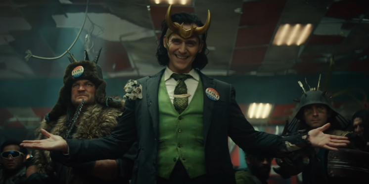

Loki
Although Loki is far from the image of a real superhero, his character managed to conquer all the viewers. Therefore, the representatives of Marvel decided to tell his story and what he is capable of without the supervision of his brother Thor.
It is this rascal from the past who will become the protagonist in the series "Loki", which is scheduled for release in May 2021. It is assumed that he will travel through time and interfere with the history of mankind. Loki from 2012 is not like Loki, who fought with Thanos: he has not yet reconciled with his brother Thor, has not got rid of the ambitions of the conqueror and does not like superheroes and earthlings in general. Judging by the first trailer, instead of the Avengers, a mysterious agency to combat interference in the course of history will try to curb it. In addition to Loki himself, the series may feature Sif — a warrior from Asgard, whom we haven't seen in the movies since the second " Thor "
Back